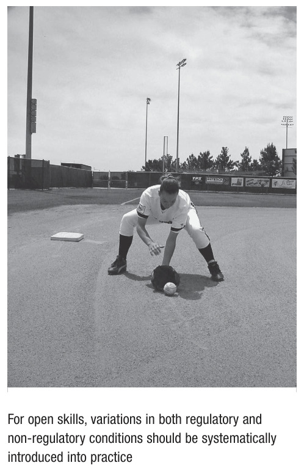
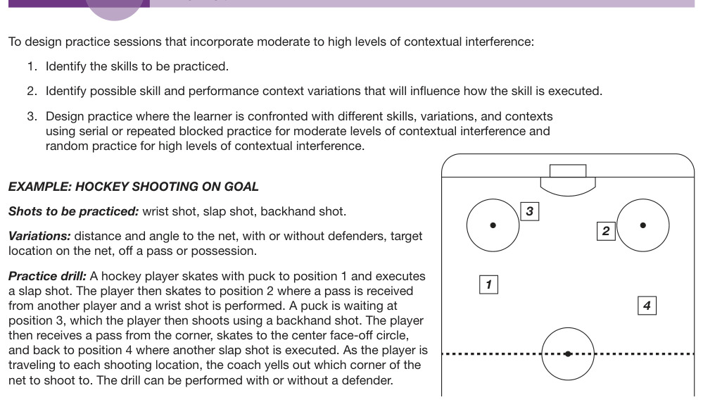

Ông Green đã trải qua ca phẫu thuật thay khớp háng và hiện đang chờ cuộc hẹn vật lý trị liệu đầu tiên. Ông cần học lại cách đi bằng chiếc khớp háng mới. Ông đã được cảnh báo rằng điều này sẽ đòi hỏi rất nhiều nỗ lực và luyện tập, nhưng ông sẵn sàng đón nhận thử thách. Sau cùng, ông có một mục tiêu: ông muốn có thể nhảy cùng cháu gái trong đám cưới của cháu.
Không có gì ngạc nhiên khi luyện tập là một thành phần then chốt của việc học hay học lại một kỹ năng vận động. Cũng không có gì ngạc nhiên khi sự thành thạo một kỹ năng cần có thời gian. Để tận dụng tối đa thời gian của mình, các lần thử luyện tập không chỉ nên được tăng số lượng mà còn phải được tối ưu hóa. Nếu nhà vật lý trị liệu của ông Green đã phát triển được sự hiểu biết thấu đáo về cách bối cảnh và sự phân bổ luyện tập ảnh hưởng đến việc học, thì giấc mơ nhảy cùng cháu gái trong đám cưới của cháu có thể trở thành hiện thực.
Một niềm tin phổ biến trong thể thao là các vận động viên phải nắm vững những nguyên tắc cơ bản. Những huấn luyện viên theo triết lý này thường tin rằng luyện tập trong các điều kiện không đổi — chẳng hạn như thực hiện mãi mãi một đường chuyền hay một cú sút giống hệt nhau — sẽ dẫn đến việc học tốt hơn, vì kiểu vận động sẽ được khắc sâu trong trí nhớ. Điều mà cách tiếp cận này bỏ qua là tầm quan trọng của khả năng khái quát hóa một kỹ năng sang nhiều tình huống thực hiện khác nhau, kể cả những tình huống có thể chưa từng được trải qua trước đây. Một cầu thủ vị trí shortstop chẳng hạn, sẽ không bắt những quả bóng lăn trên mặt đất với các thông số giống hệt nhau (tốc độ, quỹ đạo, vị trí trên sân) lặp đi lặp lại trong một trận đấu. Tương tự, một bệnh nhân hội chứng ống cổ tay đang tập để lấy lại chức năng bàn tay sẽ không cài cùng một chiếc áo mỗi ngày. Các nút áo có đủ hình dạng, kết cấu và kích cỡ khác nhau, và được dùng với nhiều loại vải khác nhau. Để đạt được mục tiêu tự cài được áo, bệnh nhân sẽ phải thao tác với nhiều loại nút trong vô số điều kiện. Vì vậy, luyện tập nên được thiết kế với sự biến thiên cố hữu này trong tâm trí.
Ý niệm rằng tính biến thiên trong vận động và bối cảnh là một thành tố cần thiết cho sự phát triển kỹ năng và khả năng khái quát hóa có nền tảng lý thuyết vững chắc. Trên thực tế, một dự đoán căn bản của lý thuyết lược đồ của Schmidt (xem Chương 4) là luyện tập biến đổi sẽ tăng cường sự phát triển lược đồ của người học. Lược đồ này, đến lượt nó, sẽ nâng cao khả năng của người thực hiện trong việc chọn các đặc tả đáp án hay các giá trị thông số phù hợp nhằm đạt được một mục tiêu vận động. Những người ủng hộ tiếp cận dựa trên ràng buộc cũng đề xuất tính biến thiên có mục tiêu của luyện tập thay vì luyện tập máy móc, lặp đi lặp lại, để cho phép người học khám phá và tìm ra các giải pháp và kỹ thuật vận động tối ưu phù hợp với họ. Cụm từ lặp lại mà không lặp lại (repetition without repetition), do Bernstein (1967) đặt ra, nhắc nhở người thực hành rằng dù các lần lặp lại là một phần cần thiết của quá trình học, những lần lặp đó nên buộc người học liên tục
Douvis (2005) đã kiểm tra ảnh hưởng của luyện tập biến đổi đối với cú đánh thuận tay trong tennis ở trẻ em và thanh thiếu niên muộn. Bốn mươi bé trai từ 9 đến 10 tuổi và 40 nam sinh từ 18 đến 19 tuổi đã tham gia vào một chương trình hướng dẫn chung, ba lần mỗi tuần trong sáu tuần, chỉ khác nhau về điều kiện luyện tập. Trong giai đoạn luyện tập của mỗi buổi, người tham gia thực hiện 100 cú đánh thuận tay từ một điểm thực hiện cố định trên sân, nhắm vào không có mục tiêu cụ thể, một mục tiêu, bốn mục tiêu hoặc năm mục tiêu. Sau khi hoàn thành chương trình huấn luyện và một giai đoạn nghỉ ngơi 72 giờ, tất cả người tham gia thực hiện 60 lần thử chuyển giao tới một điểm mục tiêu duy nhất trên sân. Độ lệch về độ chính xác đã được ghi lại. Kết quả cho thấy thanh thiếu niên thực hiện các cú đánh chính xác hơn trẻ em. Ngoài ra, trẻ em luyện tập với bốn hoặc năm mục tiêu (luyện tập biến đổi) chính xác hơn đáng kể so với những trẻ luyện tập với một mục tiêu hoặc không có mục tiêu cụ thể, và ở thanh thiếu niên, luyện tập biến đổi cho độ chính xác cao hơn luyện tập không có mục tiêu cụ thể. Giả thuyết về tính biến thiên của luyện tập đã được ủng hộ, vì luyện tập với bốn hoặc năm mục tiêu mang lại tính nhất quán thực hiện cao hơn bất kể nhóm tuổi.
giải quyết vấn đề, đúng như điều họ sẽ làm trong một bối cảnh thực hiện, thay vì lặp đi lặp lại cùng một động tác.
Một số nghiên cứu ủng hộ dự đoán lý thuyết rằng luyện tập biến đổi có lợi cho việc học. Shea và Kohl (1991) nhận thấy rằng trong suốt các lần thử luyện tập trong nghiên cứu của họ, các nhóm luyện tập cố định (những người lặp đi lặp lại cùng một biến thể kỹ năng) thực hiện rõ rệt tốt hơn nhóm luyện tập biến đổi (những người luyện tập nhiều biến thể của một kỹ năng) trong một nhiệm vụ tạo lực. Tuy nhiên, kết quả của bài kiểm tra duy trì lại cho thấy hiệu ứng ngược lại — cho thấy những tiến bộ học tập lớn hơn thực tế đã đạt được bởi nhóm luyện tập biến đổi.
Video trên web: Video giải thích về “lặp lại mà không lặp lại”: www.youtube.com/watch?v=qVt-LBQGo9o
Để hiểu trọn vẹn ý nghĩa của những phát hiện này, chúng ta phải xem lại sự phân biệt giữa việc học và thực hiện. Hãy nhớ rằng việc học được định nghĩa là một thay đổi tương đối bền vững trong khả năng thực hiện một kỹ năng vận động của một người, như kết quả của luyện tập hoặc kinh nghiệm. Thực hiện, mặt khác, là một biểu hiện tạm thời của kỹ năng. Dù luyện tập cố định được thấy có ảnh hưởng lớn hơn đến thực hiện, luyện tập biến đổi lại có ảnh hưởng lớn hơn đến việc học. Những phát hiện tương tự đã được báo cáo cho việc ném phạt trong bóng rổ (Shoenfelt et al., 2002; Memmert, 2006), một nhiệm vụ né tránh chướng ngại vật (Cohen, Bloomberg, & Mulavara, 2005), cú đánh thuận tay trong tennis (Douvis, 2005), và cú phát bóng trong tennis (Hernández-Davo et al., 2014).
cần đưa ra một cách hệ thống các biến thiên trong điều kiện điều chỉnh, điều kiện không điều chỉnh, hoặc cả hai. Ví dụ, trong các kỹ năng mở, chẳng hạn như bắt một quả bóng lăn trên mặt đất, đáp án của một người phải phù hợp với yêu cầu của một môi trường luôn thay đổi. Đối với kỹ năng này, luyện tập nên trình bày các biến thiên ở cả điều kiện điều chỉnh (ví dụ, vị trí của người học trên sân, tốc độ và quỹ đạo của bóng) lẫn điều kiện không điều chỉnh (ví dụ, tiếng la ó của khán giả) có thể xảy ra trong bối cảnh ứng dụng. Cách tiếp cận tương tự cũng áp dụng cho các kỹ năng kín liên quan đến tính biến thiên giữa các lần thử. Luyện tập biến đổi cho động tác đứng dậy từ ghế chẳng hạn, có thể gồm các độ cao ghế khác nhau, ghế có và không có tay vịn, sự thay đổi về độ êm của mặt ngồi, và các bề mặt sàn khác nhau (gạch, thảm, vinyl, v.v.).
Nhưng còn những kỹ năng như thực hiện một bài thăng bằng trên xà, trong đó mục tiêu của thực hiện là tái tạo một kiểu vận động một cách nhất quán và chính xác thì sao? Trong những trường hợp như vậy, luyện tập nên được thiết kế sao cho các điều kiện điều chỉnh (ví dụ, chiều cao và chiều rộng của xà) giữ không đổi, trong khi người học tiếp xúc với nhiều điều kiện không điều chỉnh tiềm ẩn khác nhau (ví dụ, các yếu tố gây phân tâm).
Đôi khi người ta lập luận ủng hộ luyện tập biến đổi rằng trong một bối cảnh thực hiện thực tế, cùng một động tác không bao giờ được thực hiện hai lần. Bạn đồng ý hay không đồng ý với nhận định này? Hãy xây dựng một lập luận để bảo vệ quan điểm của bạn.
Để tối đa hóa những lợi ích tiềm năng của luyện tập biến đổi, người thực hành phải cân nhắc cẩn thận cách thức và thời điểm đưa tính biến thiên vào buổi luyện tập.
Theo Gentile (2000), để xác định cách triển khai tính biến thiên trong luyện tập, trước hết phải đánh giá bản chất của kỹ năng đang được học và môi trường mà kỹ năng đó sẽ được thực hiện. Sau đó, tùy theo đánh giá đó, người thực hành

Hình 10.1: Đối với các kỹ năng mở, cần đưa cả biến thiên trong điều kiện điều chỉnh lẫn điều kiện không điều chỉnh vào luyện tập một cách hệ thống
bên cạnh việc thao tác bối cảnh mà kỹ năng được thực hiện, cũng có thể đa dạng hóa luyện tập kỹ năng thông qua việc dùng các khái niệm vận động và các thử thách (Boyce, Coker, & Bunker, 2006).
Các khái niệm vận động được dùng trong giáo dục thể chất tiểu học để tạo ra các biến thể vận động bằng cách mô tả cách các kỹ năng được thực hiện (Graham, Holt/Hale, & Parker, 2020). Những khái niệm này gồm các biến số như hướng (lên/xuống, tới/lùi, v.v.), thời gian (nhanh/chậm), lực (mạnh/nhẹ), và đường đi (thẳng/cong/zíc-zắc). Để biết thêm thông tin và một minh họa đồ họa về cách kết hợp các khái niệm vận động, người thực hành nên tham khảo Bánh Xe Phân Tích Vận động (Movement Analysis Wheel) của Graham và các cộng sự (2020).
Các thử thách là những biến thể của một nhiệm vụ có kèm theo một tiêu chí, cho phép người học kiểm tra tiến triển của mình và tự đánh giá thực hiện của họ. Theo Shimon (2011), có thể tạo ra các thử thách bằng cách đặt những câu hỏi như “Bạn có thể làm được bao nhiêu lần, xa đến đâu hoặc nhanh đến mức nào…?” Chẳng hạn, một cầu thủ bóng chuyền có thể được thử thách phát bóng 15 lần sang sân đối phương và xem chịu được bao nhiêu mục tiêu khác nhau đã được đặt trên sàn. Một ví dụ khác, khi huấn luyện lại cảm giác tự thân ở chi dưới và mắt cá chân bằng một bảng dao động, có thể thiết kế một loạt thử thách gồm (1) lắc bảng từ trước ra sau nhiều nhất có thể trong một phút, (2) giữ thăng bằng trên bảng dao động lâu nhất có thể mà các cạnh không chạm sàn, và (3) xoay bảng dao động thành một vòng tròn mà cạnh bảng không chạm sàn ba lần theo cả hai hướng.
Nhiệm vụ Thử thách từ PE Central: www.pecchallenge.org/challenges/challengelist.html
Mô hình các giai đoạn học của Gentile cung cấp cho người thực hành những hướng dẫn về thời điểm nên triển khai luyện tập biến đổi. Theo Gentile (2000),
Thay đổi bối cảnh luyện tập đối với kỹ năng kín và kỹ năng mở
Kỹ năng kín — Kỹ năng mở
mục tiêu của người học khi được giới thiệu một kỹ năng vận động mới là phát triển sự hiểu biết về các yêu cầu của nhiệm vụ. Luyện tập trong giai đoạn học ban đầu này vì vậy nên tạo điều kiện cho người học phát triển một kiểu vận động cơ bản. Luyện tập nên được tiến hành theo cách không làm người mới bắt đầu choáng ngợp, đồng thời cung cấp cơ hội thành công để nâng cao sự tự tin của họ. Những mục tiêu này đạt được tốt nhất thông qua luyện tập cố định. Một khi người học đã tiếp thu được kiểu vận động cơ bản, nên đưa các chiến lược luyện tập biến đổi vào.
Một người thực hành có thể quyết định tiếp tục dùng luyện tập cố định thay vì chuyển sang luyện tập biến đổi sau khi người học đã hiểu kiểu vận động cơ bản, vì người học sẽ trải nghiệm thành công nhiều hơn trong luyện tập. Bạn đã học trước đó rằng trải nghiệm thành công trong luyện tập dẫn đến động lực lớn hơn. Bạn có thể dùng những chiến lược nào để duy trì động lực của người học trong khi vẫn áp dụng lịch luyện tập biến đổi?
Sau khi xác định rằng tính biến thiên trong luyện tập là cần thiết, người thực hành tiếp theo phải quyết định cách tổ chức buổi luyện tập. Dù người học đang học nhiều biến thể trong một kỹ năng (ví dụ, thực hiện cú ném rổ từ các khu vực khác nhau trên sân, cả khi có lẫn khi không có hậu vệ) hay đang cố tiếp thu nhiều kỹ năng khác nhau (ví dụ, cú ném đứng tại chỗ, cú ném lên rổ, cú ném rổ khi nhảy, và cú ném phạt), người thực hành cũng phải chọn một trình tự luyện tập tối ưu. Những gợi ý hữu ích có thể được rút ra từ một hiện tượng luyện tập gọi là nhiễu bối cảnh.
Việc duy trì dài hạn một kỹ năng vận động đạt được tốt nhất bằng cách luyện tập một kỹ năng lặp đi lặp lại trước khi chuyển sang một phiên bản khác của nhiệm vụ hoặc sang một nhiệm vụ hoàn toàn khác.
Nhiễu bối cảnh phát sinh từ việc chuyển đổi từ kỹ năng này sang kỹ năng khác, hoặc thay đổi bối cảnh mà một nhiệm vụ được luyện tập từ lần thử này sang lần thử khác. Dù thuật ngữ “nhiễu” thường mang nghĩa tiêu cực, nhiễu bối cảnh là một chiến lược học tập tích cực đã được chứng minh là tạo thuận lợi cho tiếp thu kỹ năng (Battig, 1972, 1979). Mức độ nhiễu bối cảnh xảy ra là chức năng của cách các nhiệm vụ được tích hợp trong một buổi luyện tập. Ở một đầu của dải khả năng, nhiễu bối cảnh thấp xảy ra khi các lần thử luyện tập được tổ chức theo lịch theo khối. Trong luyện tập theo khối, người học luyện tập một kỹ năng hay một biến thể kỹ năng lặp đi lặp lại rồi mới chuyển sang một kỹ năng hay biến thể khác. Ví dụ, trong một buổi luyện tập 30 phút, một huấn luyện viên khúc hốc quy có thể cho các cầu thủ tập chuyền bóng trong 10 phút, chuyển sang cú sút cổ tay trong 10 phút tiếp theo, và dành 10 phút cuối cho cú sút mạnh. Nhiễu bối cảnh cao xảy ra khi nhiều nhiệm vụ hay biến thể nhiệm vụ được thực hiện theo thứ tự ngẫu nhiên. Trong luyện tập ngẫu nhiên, huấn luyện viên khúc hốc quy có thể cho các cầu thủ thực hiện cùng số lần lặp lại trong buổi 30 phút, nhưng các kỹ năng được sắp xếp sao cho không biến thể nào (chuyền, sút cổ tay, sút mạnh) được lặp lại hai lần liên tiếp.
Các nghiên cứu xem xét hiệu quả của luyện tập ngẫu nhiên so với luyện tập theo khối đối với tiếp thu kỹ năng đã cho thấy một phát hiện khá nhất quán: nhiễu bối cảnh thấp (luyện tập theo khối) thường tạo ra thực hiện ngắn hạn tốt hơn trong lúc luyện tập, nhưng việc luyện tập nhiều kỹ năng hay biến thể kỹ năng theo thứ tự ngẫu nhiên (nhiễu bối cảnh cao) lại dẫn đến tiến bộ học tập dài hạn lớn hơn (ví dụ, Shea & Morgan, 1979). Sự đảo ngược kết quả này của luyện tập ngẫu nhiên đã được gọi là hiện tượng nhiễu bối cảnh.
Các nhà nghiên cứu đã đưa ra hai giải thích để lý giải hiện tượng nhiễu bối cảnh. Giả thuyết thứ nhất, giả thuyết tinh chỉnh (elaboration hypothesis), cho rằng khi dùng luyện tập ngẫu nhiên, bộ nhớ làm việc đồng thời chứa nhiều nhiệm vụ, cho phép dễ dàng phân biệt giữa chúng hơn (Shea & Morgan, 1979). Những sự phân biệt này củng cố biểu diễn trí nhớ của từng kỹ năng, làm cho kỹ năng đó sẵn có hơn đối với người học.
Một đề xuất thứ hai, do Lee và Magill (1985) đưa ra và được gọi là giả thuyết tái cấu trúc kế hoạch hành động (action plan reconstruction hypothesis), cho rằng luyện tập ngẫu nhiên tạo thuận lợi cho việc học bằng cách gây ra sự quên tạm thời các giải pháp nhiệm vụ giữa các lần thử. Hệ quả là người học bị buộc phải tạo lại một giải pháp nhiệm vụ mỗi khi họ thử một biến thể kỹ năng cụ thể. Trong luyện tập theo khối, sự tái tạo này chỉ xảy ra ở lần thử đầu tiên của mỗi khối. Vì vậy, luyện tập theo khối khuyến khích học thụ động thay vì lôi kéo người học vào các hoạt động xử lý nhằm củng cố chương trình vận động và sự truy xuất nó từ trí nhớ (Patterson & Lee, 2008).
Dù hiện tượng nhiễu bối cảnh đã được chứng minh là tương đối bền vững trong môi trường phòng thí nghiệm (ví dụ, Shea & Morgan, 1979; Lee & Magill, 1983; Wood & Ging, 1991; Tsutsui, Lee, & Hodges, 1998; Li & Wright, 2000; Maslovat et al.,
Để xác định liệu hiện tượng nhiễu bối cảnh có đúng với những người thực hiện lành nghề hay không, Hall, Domingues, và Cavasos (1994) đã kiểm tra ảnh hưởng của các lịch luyện tập đánh bóng khác nhau đối với thực hiện đánh bóng của các cầu thủ bóng chày đại học. Các cầu thủ tham gia hai buổi luyện tập đánh bóng bổ sung trong sáu tuần, trong đó họ nhận 15 cú bóng nhanh, 15 cú bóng cong và 15 cú bóng đổi tốc độ. Thứ tự trình bày các cú ném phụ thuộc vào việc phân nhóm. Các cầu thủ trong nhóm theo khối nhận 15 cú ném liên tiếp của mỗi loại theo các khối lặp lại, còn nhóm ngẫu nhiên nhận cùng những cú ném đó nhưng theo thứ tự ngẫu nhiên. Khi được kiểm tra trong điều kiện giống thi đấu, các cầu thủ ở nhóm ngẫu nhiên thực hiện tốt hơn những người ở nhóm theo khối. Những kết quả này chứng minh rằng luyện tập ngẫu nhiên không chỉ có lợi cho người mới bắt đầu mà còn tạo thuận lợi cho sự cải thiện thực hiện ở cả những người thực hiện lành nghề.
2004; Simon, 2007), các nghiên cứu kiểm tra khả năng khái quát hóa của nó sang các bối cảnh ứng dụng lại kém thuyết phục hơn (xem Barreiros, Figueiredo, & Godinho [2007], Brady [2008], và Wright & Kim [2020] để xem các bài tổng quan). Kết quả duy trì vượt trội đã được tìm thấy cho luyện tập ngẫu nhiên trong các nghiên cứu dùng cú phát cầu lông (Goode & Magill, 1986; Wrisberg & Liu, 1991), cú đánh bóng chày (Hall et al., 1994), cú đánh thuận tay và trái tay trong tennis (Hebert, Landin, & Solomon, 1996), cú putt và cú chip trong golf (Porter et al., 2007), cú lật kayak (Smith & Davies, 1995), bắn súng trường (Boyce & Del Rey, 1990), và các kỹ năng trượt tuyết trên ván (Smith, 2002); trong khi các cuộc điều tra khác lại cho thấy không có khác biệt giữa lịch luyện tập theo khối và ngẫu nhiên (ví dụ, Smith, Gregory, & Davies, 2003; Jones & French, 2007; Zetou et al., 2007; Žuvela, Maleš, & Čerkez, 2009; Bertollo et al., 2010; Cheong et al., 2012; Jimenez-Diaz, Morrera-Castro, & Salazar, 2018). Lại có những nghiên cứu khác cho thấy không có khác biệt giữa luyện tập theo khối và ngẫu nhiên về duy trì, nhưng lại cho thấy lợi ích học tập có thể khái quát hóa thông qua các bài kiểm tra chuyển giao — một chỉ báo khác của việc học được thảo luận trong Chương 5. Ví dụ gồm việc học các kỹ năng tự ăn ở bệnh nhân đột quỵ (Jo, Noh, & Kam, 2020) và các kỹ năng khúc hốc quy trên sân cỏ (Cheong, Lay, & Razman, 2016).
Những phát hiện mâu thuẫn này về lợi ích của luyện tập ngẫu nhiên trong bối cảnh ứng dụng đã được quy cho một số yếu tố. Trước hết, bản chất của nhiệm vụ dường như ảnh hưởng đến hiệu ứng nhiễu bối cảnh. Ý niệm này dựa trên giả thuyết của Magill và Hall (1990) rằng xác suất gây ra hiệu ứng nhiễu bối cảnh phụ thuộc vào việc các biến thể nhiệm vụ được triển khai có do cùng một chương trình vận động tổng quát chi phối hay không. Magill và Hall cho rằng luyện tập các nhiệm vụ do những chương trình vận động khác nhau kiểm soát buộc người học phải tham gia vào nhiều xử lý nhận thức hơn, lần lượt dẫn đến nhiễu lớn hơn và việc học được tăng cường. Mặt khác, các biến thể trong cùng một nhiệm vụ chỉ yêu cầu điều chỉnh thông số của cùng một chương trình, nên ít có khả năng tạo ra mức nhiễu tới hạn cần thiết để gây ra hiệu ứng tương tự. Magill và Hall còn cho rằng luyện tập các kỹ năng khác biệt hơn sẽ mang lại tiến bộ học tập lớn hơn so với luyện tập các kỹ năng giống nhau.
Tuy nhiên, một số nghiên cứu lại cho thấy chỉ điều chỉnh thông số cũng có thể gây ra hiệu ứng nhiễu bối cảnh (Keller et al., 2006; Landin & Hebert, 1997; Sekiya et al., 1994). Cần thêm nghiên cứu để giải quyết tranh luận này.
Các đặc điểm của người học, chẳng hạn như tuổi và trình độ kỹ năng, cũng được cho là ảnh hưởng đến hiệu ứng nhiễu bối cảnh. Dù số lượng còn hạn chế, các nghiên cứu khám phá mối quan hệ giữa nhiễu bối cảnh và độ tuổi đã nhận thấy luyện tập theo khối (nhiễu bối cảnh thấp) nhìn chung thúc đẩy việc học tốt hơn ở trẻ em (Hall & Boyle, 1993; Brady, 1998). Tương tự, lợi thế của luyện tập theo khối cũng được ghi nhận ở những người học mới bắt đầu trong các giai đoạn đầu của tiếp thu kỹ năng (Del Rey, Whitehurst, & Wood, 1983; Hebert et al., 1996; Landin & Hebert, 1997). Vì cần một mức độ xử lý nhận thức cao trong giai đoạn học ban đầu để phát triển sự hiểu biết về động tác, nên có khả năng mức nhiễu cao do điều kiện luyện tập ngẫu nhiên tạo ra chỉ đơn giản là làm người học quá tải (Magill & Hall, 1990). Do đó, các điều kiện nhiễu cao có thể chỉ hiệu quả sau khi đạt được một mức độ thành thạo nhất định (Del Rey et al., 1983; Del Rey, 1989; Hebert et al., 1996).
Những kết quả này gợi ý rằng việc học ban đầu nên được tổ chức bằng luyện tập theo khối, sau đó chuyển sang luyện tập ngẫu nhiên một khi người học đã đạt được một mức độ thành thạo nhất định. Tuy nhiên, dựa trên phát hiện của mình, Landin và Hebert (1997) đề xuất rằng mức nhiễu bối cảnh trung bình có thể tốt hơn trong bối cảnh ứng dụng. Để tạo ra nhiễu bối cảnh mức trung bình, người thực hành có thể dùng các mức độ khác nhau của luyện tập tuần tự, trong đó một trình tự cố định các lần thử được lặp đi lặp lại. Thay vì 10 cú sút liên tiếp ở mỗi trong bốn vị trí (theo khối) hoặc một cú sút từ mỗi vị trí qua 10 vòng (ngẫu nhiên), một ví dụ về luyện tập tuần tự là thực hiện một cú sút từ mỗi trong bốn vị trí rồi lặp lại vòng đó 20 lần. Một ví dụ khác là thực hiện năm cú sút liên tiếp ở mỗi trong bốn vị trí, lặp lại vòng đó hai lần. Hình thức luyện tập tuần tự sau, được gọi là luyện tập theo khối lặp lại, kết hợp các ưu điểm của luyện tập theo khối và ngẫu nhiên; nó cung cấp cho người học cơ hội điều chỉnh từng nhiệm vụ trong khi vẫn thực hiện nhiều nhiệm vụ trong một buổi luyện tập (Landin & Hebert, 1997; Proteau et al., 1994).
Chiến lược này cũng dường như có lợi vì về mặt lý thuyết nó đáp ứng được dải trình độ kỹ năng rộng thường thấy trong bối cảnh ứng dụng (Landin & Hebert, 1997). Dù cần thêm nghiên cứu để khám phá trọn vẹn tiềm năng của nhiễu bối cảnh mức trung bình trong các bối cảnh ứng dụng, Keller và các cộng sự đã báo cáo sự ủng hộ cho việc sử dụng nó (2006). Xem Bảng 10.2 để có ví dụ về các biến thể lịch luyện tập.
Mức nhiễu bối cảnh trung bình dường như phù hợp với các ý tưởng do Guadagnoli và Lee (2004) đề xuất trong khung điểm thử thách (challenge point framework) (Brady, 2008). Theo khung này, một lượng thông tin tối ưu phải sẵn có thì việc học mới có thể xảy ra. Lượng thông tin đó là chức năng của trình độ kỹ năng của người học và độ khó của nhiệm vụ đang được học (Guadagnoli & Lee, 2004). Theo đó, người thực hành nên cân nhắc mối quan hệ giữa trình độ kỹ năng và độ phức tạp của nhiệm vụ để xác định mức nhiễu bối cảnh có thể tạo thuận lợi tốt nhất cho việc học.
Ví dụ về các biến thể luyện tập (theo khối, tuần tự, theo khối lặp lại và ngẫu nhiên) để luyện tập ba kỹ năng khúc hốc quy khác nhau (chuyền bóng, sút mạnh và sút cổ tay) trong một buổi
Loại hình luyện tập — Cách triển khai
Phù hợp với giả thuyết điểm thử thách là một lịch luyện tập tăng dần mức nhiễu bối cảnh một cách hệ thống. Porter và Magill (2010) đã tiến hành hai thí nghiệm xem xét một tiến trình luyện tập tăng từ nhiễu bối cảnh thấp đến trung bình rồi cao, so với các mức cố định (chỉ theo khối hoặc chỉ ngẫu nhiên). Việc tăng dần mức nhiễu bối cảnh một cách hệ thống được thấy là tạo thuận lợi cho việc học các nhiệm vụ do cùng một chương trình vận động chi phối (các biến thể khoảng cách trong cú putt golf) cũng như các nhiệm vụ do các chương trình vận động tổng quát khác nhau chi phối (ba đường chuyền khác nhau trong bóng rổ: chuyền ngực, chuyền qua đầu, chuyền bằng một tay). Những phát hiện tương tự cũng đã được báo cáo bởi Porter và Beckerman (2016) và Porter và Saemi (2010), những người lưu ý rằng “một lý do khiến lịch luyện tập cung cấp sự gia tăng dần CI [nhiễu bối cảnh] có thể có lợi là nó thử thách người học ở mức phù hợp bằng cách tạo ra một môi trường trở nên khó khăn hơn dần khi trình độ kỹ năng của vận động viên cải thiện” (tr. 69).
Dù cần thêm các cuộc điều tra trong nhiều môi trường thể thao và vận động khác nhau, các phương pháp nghiên cứu mới hứa hẹn sẽ giải quyết một số sự khác biệt về hiệu quả của huấn luyện nhiễu bối cảnh (xem Farrow & Buszard, 2017). Tuy nhiên, nghiên cứu cho đến nay nên khuyến khích người thực hành xem xét lại các phương pháp luyện tập truyền thống ăn sâu (Coker & Fischman, 2010). Luyện tập theo khối dường như có lợi trong giai đoạn tiếp thu kỹ năng sơ khởi và nên được dùng cho đến khi người học nắm được ý của động tác. Một khi đã đạt được sự thành thạo cơ bản, nên đưa mức nhiễu bối cảnh trung bình hoặc cao vào để lôi kéo người học vào các hoạt động xử lý nhận thức bậc cao nhằm tạo thuận lợi cho việc học. Luyện tập nên được tổ chức bằng các lịch tuần tự, theo khối lặp lại và ngẫu nhiên kết hợp nhiều kỹ năng và nhiều biến thể kỹ năng. Ví dụ, thay vì bắt một cầu thủ tennis phát bóng vào cùng một điểm ở mỗi lần luyện, hãy đặt các cọc nhựa màu ở những vị trí khác nhau quanh sân để thay đổi vị trí phát bóng. Hãy luyện cú thuận tay và trái tay trong cùng một buổi, và thay đổi loại bóng chuyền hoặc khu vực sân mà người học đánh bóng (Jackson, 2001). Trong một phòng khám phục hồi chức năng, hãy thiết kế các trạm để bệnh nhân có thể luyện các kỹ năng thao tác khác nhau. Với những bệnh nhân học lại cách đi, hãy thay đổi độ dốc, hướng và tốc độ. Để dạy bắt bóng, hãy dùng nhiều vật khác nhau về kích cỡ và kết cấu, gồm bóng, vòng, túi đậu và gà cao su. Hình 10.2 đưa ra các bước thiết kế một buổi luyện tập có nhiễu bối cảnh.
Khi triển khai các mức nhiễu bối cảnh cao hơn, hãy nhớ rằng thực hiện trong lúc luyện tập có thể suy giảm. Tuy nhiên, không được để kiểu vận động bị rối loạn hoàn toàn. Người thực hành phải cảnh giác trong việc

Hình 10.2: Thiết kế các buổi luyện tập có nhiễu bối cảnh
Để thiết kế các buổi luyện tập kết hợp mức nhiễu bối cảnh từ trung bình đến cao:
VÍ DỤ: SÚT BÓNG VÀO LƯỚI TRONG KHÚC HỐC QUY
Các cú sút cần luyện: sút cổ tay, sút mạnh, sút trái tay.
Các biến thể: khoảng cách và góc tới lưới, có hoặc không có hậu vệ, vị trí mục tiêu trên lưới, sau một đường chuyền hoặc khi đang giữ bóng.
Bài tập: Một cầu thủ trượt với puck đến vị trí 1 và thực hiện cú sút mạnh. Sau đó cầu thủ trượt đến vị trí 2, nơi nhận một đường chuyền từ cầu thủ khác và thực hiện cú sút cổ tay. Một puck đã sẵn ở vị trí 3, và cầu thủ sút nó bằng cú sút trái tay. Rồi cầu thủ nhận một đường chuyền từ góc sân, trượt đến vòng tròn giữa sân, và trở lại vị trí 4 để thực hiện một cú sút mạnh khác. Khi cầu thủ di chuyển đến từng vị trí sút, huấn luyện viên hét lên góc nào của lưới cần sút tới. Bài tập có thể thực hiện có hoặc không có hậu vệ.
Các vị trí trên sân: 1, 4, 2, 3.
xác định liệu các yêu cầu của cấu trúc luyện tập có đang ảnh hưởng bất lợi đến việc học hay không và, nếu cần, quay lại các mức nhiễu bối cảnh thấp hơn.
Thực hiện kém hơn gắn với mức nhiễu bối cảnh cao hơn có thể dẫn đến động lực giảm sút. Ý niệm này được ủng hộ bởi các nghiên cứu xem xét ước tính của người học về tiến triển của họ trong các điều kiện nhiễu bối cảnh khác nhau. Khi được yêu cầu dự đoán mình sẽ làm thế nào trong một bài kiểm tra duy trì, những người học luyện tập trong điều kiện ngẫu nhiên đã đánh giá thấp điểm số của mình, dù họ dự đoán thực hiện chính xác hơn những người luyện tập theo khối; những người học này lại tự tin quá mức vào đánh giá về mức độ mình đã học được (Simon và Bjork, 2001; Simon, 2007). Do đó, “ấn tượng sai rằng việc học tiến triển kém hơn thực tế,” như Lee và Wishart (2005, tr. 74) lưu ý, có thể dẫn đến việc chấm dứt luyện tập. Khi chuyển từ luyện tập theo khối sang các mức nhiễu bối cảnh cao hơn, người học nên được giáo dục về lợi ích của việc luyện tập trong điều kiện nhiễu bối cảnh cao hơn.
Hoạt động trình bày trong Hình 10.2 là một ví dụ về bài tập tách rời. Dù cả luyện tập biến đổi lẫn nhiễu bối cảnh đều đã được kết hợp trong thiết kế của nó, rất ít hay không có sự tri giác và ra quyết định nào được yêu cầu, vì huấn luyện viên đã quyết định trước những gì cầu thủ sẽ làm ở mỗi trạm. Trong các bài tập huấn luyện tách rời, tiêu điểm là thực hiện động tác, và hình thức luyện tập này gắn với cách tiếp cận hướng dẫn trực tiếp truyền thống. Mặt khác, các hoạt động dựa trên trò chơi tích hợp các kỹ năng kỹ thuật, tri giác và ra quyết định bằng cách áp đặt một bối cảnh trò chơi (có cả đối thủ) để kích thích giải quyết vấn đề. Những hoạt động này thường có dạng các tình huống hoặc trò chơi quy mô nhỏ/được điều chỉnh, phù hợp
Hoạt động theo trạm là một cách tuyệt vời để triển khai luyện tập theo khối lặp lại hoặc ngẫu nhiên. Ví dụ, trong bóng đá, có thể thiết lập sáu trạm quanh sân để luyện cú sút bằng mu bàn chân, cú bắt bóng, dắt bóng, sút volley, ném biên và đánh đầu. Tại mỗi trạm, một thẻ nhiệm vụ như ví dụ được cung cấp sẽ mô tả hoạt động cần thực hiện và số lần thử cần làm trước khi người học chuyển sang trạm kế tiếp.
Trạm 1
Bắt đầu từ phía trong của cọc đầu tiên, hãy dắt bóng qua các cọc, dùng mặt trong của bàn chân khi đi lên và mặt ngoài của bàn chân khi quay về. Lặp lại mười lần rồi chuyển sang Trạm 2.
với cách tiếp cận bàn tay buông (hands-off approach), và đã được chứng minh là cải thiện khả năng ra quyết định và nhận thức chiến thuật của cầu thủ trong các bối cảnh thi đấu đồng đội cạnh tranh, đặc biệt khi huấn luyện viên thúc cầu thủ suy nghĩ về các khía cạnh khác nhau của trò chơi thông qua các chiến lược đặt câu hỏi hiệu quả. Tuy nhiên, có rất ít bằng chứng ủng hộ việc các hoạt động dựa trên trò chơi có hiệu quả đối với phát triển kỹ năng kỹ thuật ở các vận động viên (xem Kinnerk et al., 2018 để xem tổng quan).
Dù có những kết quả có lợi của cách tiếp cận dựa trên trò chơi trong thể thao, Stolz và Pill (2014) báo cáo kết quả chưa xác định về hiệu quả của nó trong giảng dạy giáo dục thể chất, trong khi Miller (2015) không tìm thấy sự ủng hộ cho cả phát triển kỹ năng kỹ thuật lẫn phát triển khả năng ra quyết định trong lúc chơi. Dù một số lý do cho sự không nhất quán trong nghiên cứu
Video trên web: So sánh bài tập tách rời với hoạt động dựa trên trò chơi để phát triển khả năng làm chủ bóng trong bóng đá: www.youtube.com/watch?time_continue=192&v=ZeVzoQUBKn4 đã được nêu ra, Miller (2015) gợi ý rằng khối lượng can thiệp đóng vai trò trong sự phát triển của khả năng ra quyết định và thực hiện kỹ năng trong cách tiếp cận dựa trên trò chơi. Những cân nhắc khác khi quyết định nên dùng phương pháp nào gồm mức độ sẵn sàng phát triển của người học (Dania & Harvey, 2020), trình độ thành thạo kỹ năng nền tảng của họ (Holt, Ward, & Wallhead, 2006), và mục tiêu học tập.
Cho đến nay, thảo luận của chúng ta về tổ chức các buổi luyện tập tập trung vào việc sắp xếp các nhiệm vụ và các biến thể của nhiệm vụ trong một buổi. Tổ chức luyện tập cũng gồm các quyết định về thời lượng và tần suất của chính các buổi luyện tập, cũng như sự phân bổ thời gian trong một buổi duy nhất. Nên đưa ra những quyết định này như thế nào để tối ưu hóa việc học?
Người thực hành có thể dễ dàng thao tác sự phân bổ luyện tập, được định nghĩa theo tỉ lệ giữa thời gian người học thực sự tham gia luyện tập và thời gian nghỉ ngơi. Do đó, việc lịch luyện tập dồn hay phân bổ có lợi hơn cho tiếp thu kỹ năng là một câu hỏi mà người thực hành phải đặt ra. Luyện tập dồn được định nghĩa là luyện tập trong đó lượng thời gian dành cho nghỉ ngơi giữa các buổi hoặc các lần thử tương đối ít hơn lượng thời gian người học tham gia luyện tập. Trong luyện tập phân bổ, thành phần nghỉ ngơi giữa các buổi hoặc các lần thử bằng hoặc lớn hơn thành phần luyện tập.
Các nhà nghiên cứu đã kiểm tra ảnh hưởng của lịch luyện tập dồn so với phân bổ đối với tiếp thu kỹ năng, cả giữa các buổi lẫn trong một buổi luyện tập (xem Bảng 10.3). Liên quan đến thời lượng và tần suất của chính các buổi luyện tập,
Moulton và các cộng sự (2006) đã kiểm tra ảnh hưởng của phân bổ luyện tập đối với việc tiếp thu một kỹ năng phẫu thuật, cụ thể là nối mạch máu vi phẫu. Ba mươi tám bác sĩ nội trú phẫu thuật cấp thấp được phân ngẫu nhiên vào một lịch luyện tập dồn hoặc phân bổ. Mỗi nhóm luyện tập trong cùng một khoảng thời gian; nhóm dồn nhận bốn buổi huấn luyện trong một ngày, trong khi nhóm phân bổ nhận cùng bốn buổi đó trải ra trong bốn tuần, mỗi tuần một buổi. Một bài kiểm tra duy trì sau một tháng và một bài kiểm tra chuyển giao sang một con chuột đang gây mê còn sống đã chứng minh tính vượt trội của luyện tập phân bổ, vì nhóm này thực hiện tốt hơn đáng kể nhóm luyện tập dồn.
nghiên cứu cho thấy lợi thế học tập thuộc về những buổi gặp ngắn hơn và thường xuyên hơn (xem Baddeley & Longman, 1978 để có một nghiên cứu kinh điển). Việc dàn trải các buổi luyện tập qua nhiều ngày, so với việc dồn tất cả các buổi trong một ngày, đã được chứng minh là nâng cao cả thực hiện lẫn việc học (Dail & Christina, 2004; Shea, Lai et al., 2001). Vì vậy, trừ khi quyết định về tần suất luyện tập và thời lượng nằm ngoài tầm kiểm soát của người thực hành, luyện tập phân bổ được ưu tiên.
Sự phân bổ luyện tập tối ưu trong một buổi duy nhất vẫn còn gây tranh cãi. Sau khi xem xét các tài liệu về phân bổ luyện tập, Lee và Genovese (1988) đề xuất rằng luyện tập phân bổ có lợi cho cả thực hiện lẫn việc học, nhưng có lợi hơn cho thực hiện. García và các cộng sự (2008) đã ủng hộ đề xuất này. Hơn nữa, sự phân bổ luyện tập tối ưu dường như phụ thuộc vào nhiệm vụ (Donovan & Radosevich, 1999; Lee & Genovese, 1988, 1989). Đối với các kỹ năng liên tục — chẳng hạn như đạp xe hay bơi — luyện tập phân bổ dường như mang lợi thế học tập lớn hơn luyện tập dồn (Lee & Genovese, 1988). Ngược lại, các kỹ năng rời rạc — chẳng hạn như ném bóng, đá bóng bật cao hay bắt bóng — dường như được phục vụ tốt nhất bằng luyện tập dồn (Carron, 1969; Lee & Genovese, 1988, 1989).
Nghiên cứu về luyện tập dồn so với phân bổ đưa ra cho người thực hành một số hướng dẫn về việc sắp xếp các buổi luyện tập, huấn luyện hoặc phục hồi chức năng. Trước hết, việc học được tăng cường khi các buổi luyện tập ngắn hơn và thường xuyên hơn được sắp xếp (luyện tập phân bổ). Tốt hơn là luyện tập ba lần mỗi tuần, mỗi lần 30 phút, so với một lần mỗi tuần trong 90 phút.
(a) Ví dụ về phân bổ giữa các buổi luyện tập; (b) ví dụ về phân bổ hoạt động và nghỉ ngơi trong một buổi luyện tập
Ngày — Thời gian luyện tập — Loại luyện tập
(b) Buổi tập tạ
(a) Phân bổ giữa các buổi luyện tập.
Hãy xác định bạn sẽ dùng luyện tập dồn hay phân bổ cho các kỹ năng sau. Hãy biện minh cho câu trả lời của bạn.
Nên dùng luyện tập phân bổ để tránh các vấn đề liên quan đến mệt mỏi ở mức cao. Mệt mỏi kéo dài có thể khiến người học luyện tập các kiểu vận động sai, và điều này sẽ ảnh hưởng bất lợi đến việc học nếu vượt quá ranh giới của chương trình vận động tổng quát. Ngoài ra, mức độ mệt mỏi cao hơn khiến người học dễ bị chấn thương hơn. Vì vậy, nên dùng các đợt làm việc ngắn hơn, thường xuyên hơn với khoảng nghỉ đầy đủ giữa các buổi cho các kỹ năng mới và phức tạp, các nhiệm vụ liên tục, các nhiệm vụ vốn có yêu cầu năng lượng cao, và các nhiệm vụ mà thực hiện có liên quan đến một mức độ rủi ro nhất định. Ví dụ của những nhiệm vụ này gồm trượt băng nghệ thuật và leo núi đá. Lịch này cũng được khuyến nghị cho các kỹ năng luyện tập trong môi trường trị liệu, nơi người học mệt mỏi có thể ngã, chẳng hạn như giữ thăng bằng trên bảng dao động, và cho những người học thiếu thể lực cần thiết để duy trì hoạt động trong thời gian dài. Luyện tập nên được sắp xếp sao cho các kỹ năng mới hoặc những kỹ năng mang tính kỹ thuật cao được dạy và luyện tập vào đầu buổi, khi người học còn tươi mới; sau đó thể lực được thực hiện về cuối buổi (Jones et al., 1993).
Đối với luyện tập dồn các kỹ năng rời rạc — chẳng hạn như bắn cung hay đá bóng bật cao — người thực hành nên sắp xếp các khoảng nghỉ ngắn giữa các lần thử nhằm tối đa hóa số lần lặp và tăng cường việc học. Luyện tập dồn cũng có thể hiệu quả khi dùng với những người học đã tiếp thu kỹ năng cơ bản, có động lực, có thể trạng tốt và có khả năng chú ý kéo dài (Christina & Corcos, 1988; Jones et al., 1993). Cuối cùng, sự mệt mỏi thường hiện diện trong thi đấu có thể được tái tạo thông qua luyện tập dồn. Với điều kiện mức mệt mỏi chỉ ở mức nhẹ đến trung bình, chiến lược này có thể tăng cường thể lực và thực hiện trong tình huống thi đấu (Christina & Corcos, 1988). Tuy nhiên, luyện tập khi quá mệt mỏi, như đã thảo luận trước đó, có thể gây tác động có hại cho người học và nên tránh.
Cũng phù hợp với khung điểm thử thách là luyện tập tự điều chỉnh hay tự kiểm soát, trong đó người học được quyền chọn một số đặc điểm của tình huống luyện tập và đã được chứng minh là tạo thuận lợi cho việc học. Một ví dụ là tự kiểm soát lịch luyện tập cho nhiều nhiệm vụ (Keetch & Lee, 2007; Wu & Magill, 2011). Theo Wu và Magill (2011), khi người học được cơ hội tự chọn lịch luyện tập, cách tiếp cận họ thường áp dụng nhất là tăng dần mức nhiễu bối cảnh, và việc chuyển đổi nhiệm vụ (đổi sang nhiệm vụ khác để luyện) dường như được điều chỉnh bởi thực hiện thành công. Nói cách khác, khi luyện tập tiến triển và trình độ kỹ năng cải thiện, người học “có xu hướng chuyển nhiệm vụ thường xuyên hơn, tạo ra một lịch luyện tập có nhiều nhiễu bối cảnh hơn” (tr. 456).
Lợi thế của tự kiểm soát cũng đã được báo cáo cho số lượng và khoảng cách của các lần thử luyện tập. Trong một nghiên cứu của Post et al. (2011), những người tham gia học ném phi tiêu để đạt độ chính xác bằng tay không thuận đã hoàn thành một buổi luyện tập sau khi được cho biết phần thưởng: người có thành tích cao nhất trong bài kiểm tra ngày hôm sau sẽ nhận một thẻ quà tặng trị giá 50 đô la. Những người tham gia được cơ hội chọn thời điểm dừng luyện tập chính xác hơn trong bài chuyển giao so với những người được quyết định sẵn lượng luyện tập. Những phát hiện tương tự đã được Lessa và Chiviacowsky (2015) báo cáo, khi họ thấy tự kiểm soát số lần thử luyện tập tạo thuận lợi cho việc học và thực hiện một nhiệm vụ xếp cốc tốc độ ở người cao tuổi. Ngoài ra, việc cho người học kiểm soát cả tổng số cú sút lẫn khoảng cách giữa các cú sút có lợi cho việc học cú ném đứng tại chỗ trong bóng rổ (Post et al., 2014). Cuối cùng, vì trong nghiên cứu nêu trên, tự kiểm soát về số lượng và nhịp độ được kết hợp với nhau, Aiken và các cộng sự (2020) đã kiểm tra riêng lẻ tác động của từng yếu tố, và nhận thấy cả hai lựa chọn đều tạo thuận lợi cho việc học một cách độc lập.
Dù cần thêm nghiên cứu để hiểu trọn vẹn cách người học chọn xây dựng trải nghiệm học tập của mình cũng như những hệ quả đối với thiết kế luyện tập, một số giải thích đã được đưa ra nhằm lý giải các tác động có lợi của tự kiểm soát. Chiviacowsky và Wulf (2002) lập luận rằng khi được trao quyền tự chủ trong việc chọn các đặc điểm của môi trường luyện tập, người học có thể đáp ứng tốt hơn nhu cầu cá nhân của mình. Ngoài ra, luyện tập tự kiểm soát cũng có thể tạo ra một bầu không khí động lực tích cực cho việc học thông qua kỳ vọng được nâng cao (Lewthwaite et al., 2015), một ý niệm được ủng hộ bởi lý thuyết OPTIMAL do Wulf và Lewthwaite (2016) đề xuất và được thảo luận trong Chương 7.
Khi một người học đang nghỉ ngơi, chờ đến lượt, nghe quá nhiều hướng dẫn bằng lời, hoặc tham gia vào một bài tập được thiết kế kém, thời gian luyện tập quý giá bị lãng phí. Xét đến lượng luyện tập cần thiết để thành thạo một kỹ năng, và thực tế là thời gian sẵn có cho việc luyện tập đó thường bị hạn chế, thời gian lãng phí khiến người học không thể tối đa hóa tiềm năng học tập của mình. May mắn thay, một số chiến lược có thể giảm thời gian chết và tối đa hóa thời gian trên nhiệm vụ.
Đối với một kỹ năng do bạn chọn, hãy gợi ý những hoạt động có thể lấp đầy các khoảng nghỉ trong luyện tập và tối đa hóa hiệu quả luyện tập.
Rõ ràng, vì những tác động có hại tiềm ẩn của mệt mỏi ở mức cao (Godwin & Schmidt, 1971; Arnett, DeLuccia, & Gilmartin, 2000), không được từ chối cho người học nghỉ ngơi đầy đủ. Để tối đa hóa lợi ích của thời gian nghỉ, người thực hành thường có thể lấp đầy khoảng nghỉ bằng một hoạt động khác. Kỹ thuật này thường được dùng trong tập tạ, trong đó khoảng nghỉ của một nhóm cơ mệt được lấp bằng một hoạt động dùng nhóm cơ khác. Ví dụ, nếu chế độ tập của một vận động viên gồm ba hiệp, mỗi hiệp mười lần, cho động tác cuộn tay nhị đầu và duỗi tay ba đầu, vận động viên có thể luân phiên liên tục giữa hai bài tập. Chiến lược này cho phép cơ nhị đầu cánh tay có thời gian hồi phục đầy đủ trong khi cơ ba đầu đang được tập luyện. Những kết quả tương tự có thể đạt được thông qua việc dùng nhiễu bối cảnh. Trong luyện tập theo khối lặp lại hoặc ngẫu nhiên, sự hồi phục thường được tích hợp sẵn trong chương trình và người học không phải ngừng hoạt động hoàn toàn. Ví dụ, trong bóng chuyền, có thể dùng một vòng luân chuyển trong đó cầu thủ đập bóng, rồi chuyển sang vị trí chuyền bóng, rồi sang phía bên kia lưới để chắn, rồi bảo vệ phía sau hàng chắn, và cuối cùng kết thúc bằng việc nhặt bóng.
Beauchamp, Darst, và Thompson (1990) nhận thấy khoảng 20 phần trăm thời gian của một học sinh giáo dục thể chất trung học được dùng để chờ tham gia. Tương tự, Lacy và Lamaster (1996) nhận thấy 22 đến 28 phần trăm thời gian trong giáo dục thể chất tiểu học được dùng để chờ. Một lý do là giới hạn do lượng dụng cụ không đủ. Một huấn luyện viên bóng đá trẻ chẳng hạn, có thể có 20 thành viên nhưng chỉ có tám quả bóng. Tương tự, một giáo viên thể chất dạy cú putt trong một học phần golf có thể chỉ có bảy lỗ trên sân putt mà 35 người học phải được phân vào. Tác động đến thời gian chờ là rõ ràng, nhưng vấn đề này có thể được khắc phục bằng cách dùng dụng cụ thay thế. Ngoài tám quả bóng đá, huấn luyện viên có thể dùng bóng sân chơi có kích cỡ tương đương để dạy các kỹ năng dắt và sút bóng. Giáo viên thể chất có thể cho mỗi học sinh một cọc gậy để làm mục tiêu.
Một học sinh có thể putt bóng tới cọc thì cũng nên đưa được bóng vào lỗ. Bóng mềm có thể thay thế cho quả tạ đẩy, túi nhựa tạp hóa cho khăn quàng dùng trong tung hứng, hộp đựng bóng tennis nhồi cát cho tạ, và ruột xe đạp cho ống cao su phẫu thuật. Khả năng chỉ bị giới hạn bởi sự sáng tạo của người thực hành. Tuy nhiên, hãy cẩn thận để dụng cụ thay thế không làm thay đổi sự phối hợp nền tảng của kiểu vận động. Nếu những thay đổi rõ rệt trong kiểu vận động biểu hiện do việc dùng dụng cụ thay thế, nên điều chỉnh hoặc bỏ dụng cụ đó.
Đối với một kỹ năng do bạn chọn, hãy liệt kê những phương án thay thế có thể dùng khi lượng dụng cụ không đủ.
Thường thì, như trường hợp đẩy tạ, thiếu cơ sở vật chất hạn chế luyện tập vì người học phải chờ đến lượt. Một chiến lược nhằm giảm thời gian chờ là điều chỉnh bối cảnh thực hiện. Để kiểm tra ảnh hưởng của việc điều chỉnh bối cảnh thực hiện đối với tiếp thu kỹ năng, Coker (2005a) đã so sánh một lịch luyện tập điều chỉnh — trong đó người học luyện tập 50 phần trăm thời gian trong bối cảnh thực hiện tự nhiên và 50 phần trăm thời gian trong bối cảnh đã điều chỉnh — với việc luyện tập trong bối cảnh thực hiện tự nhiên 100 phần trăm thời gian. Hai mươi hai sinh viên đại học tình nguyện học cú ném biên trong bóng đá. Họ được chia ngẫu nhiên thành hai nhóm. Cả hai nhóm đều xem cùng một video hướng dẫn trình diễn cú ném đúng và thực hiện bốn khối, mỗi khối 15 lần ném luyện tập. Nhóm Luyện tập Bối cảnh Tự nhiên (NSP) thực hiện cả 60 cú ném vào một phòng tập mở, nơi họ có thể thấy quỹ đạo và điểm rơi của bóng. Nhóm Bối cảnh Luyện tập Điều chỉnh (MPS) luân phiên mỗi khối giữa điều kiện nhìn toàn cảnh và ném vào một tấm bạt căng trước tường phòng tập (50 phần trăm bối cảnh tự nhiên và 50 phần trăm bối cảnh điều chỉnh). Phản hồi về kỹ thuật ném đã được cung cấp. Kết quả cho thấy người tham gia ở cả hai nhóm đều cải thiện đáng kể khoảng cách ném. Ngoài ra, theo phân tích động học, hình thức ném cũng cải thiện đáng kể ở cả hai nhóm. Do đó, những người tham gia dành một nửa số lần thử luyện tập trong bối cảnh điều chỉnh đã học tốt như những người chỉ luyện tập trong bối cảnh thực hiện tự nhiên 100 phần trăm thời gian. Tác giả kết luận rằng việc luân phiên giữa bối cảnh tự nhiên và bối cảnh điều chỉnh dường như là một chiến lược khả thi để giảm thời gian chờ trong giáo dục thể chất.
Để tối đa hóa thời gian trên nhiệm vụ, người thực hành nên thiết kế các bài tập sao cho bảo đảm sự tham gia tích cực của tất cả người học. Ngoài ra, bài tập hiệu quả nên nhắm trực tiếp vào mục tiêu học tập. Tuy nhiên, nhiều bài tập và hoạt động truyền thống không đáp ứng được các tiêu chí này. Ví dụ, trong bóng chuyền, sau khi đã hình thành kiểu vận động cơ bản cho cú chuyền cẳng tay và cú chuyền trên đầu, một bài tập phổ biến là chia lớp thành hai hoặc ba nhóm lớn (sáu đến tám người) và thử thách người học xem họ có thể đánh bóng bao nhiêu lần trước khi bóng chạm sàn. Bài tập này
Hoạt động này liên quan đến việc quan sát một buổi luyện tập của đội hoặc một lớp giáo dục thể chất đang học kỹ năng chuyền hay sút bóng (bóng đá, khúc hốc quy trên sân cỏ, bóng rổ, v.v.). Trước khi quan sát, hãy tải ứng dụng Dartfish EasyTag lên điện thoại hoặc máy tính bảng của bạn. Tạo một bảng đại diện cho từng cầu thủ/học sinh tương tự như bảng minh họa bên phải và làm quen với cách ứng dụng hoạt động (xem www.youtube.com/watch?v=Hc3GAdFu97I).
Hãy quan sát một số hoạt động/bài tập luyện tập, ghi chú với mỗi hoạt động số lần mà mỗi cầu thủ/học sinh có cơ hội thực hiện nhiệm vụ (ví dụ, sút, chuyền hoặc nhận bóng). Sau đó xác định tổng số lần mỗi cá nhân đã chạm/thao tác với bóng và mức độ họ có vẻ được động lực hóa trong bài tập. Ngoài ra, hãy thảo luận mức độ mà thiết kế của bài tập mang tính đại diện đối với bối cảnh thực hiện thực tế. Dựa trên dữ liệu của bạn, hãy xác định giá trị của bài tập và đưa ra gợi ý về cách cải thiện nó, hoặc đề xuất một hoạt động thay thế có thể tạo thuận lợi hiệu quả hơn cho tiếp thu kỹ năng.
cung cấp cho người học cơ hội luyện tập các kỹ năng mới học, thúc đẩy luyện tập ngẫu nhiên và nâng cao động lực, nhưng với quy mô của các nhóm, mỗi người học sẽ không có nhiều lần chạm bóng. Hơn nữa, định hướng mục tiêu của người học sẽ là không để bóng chạm đất thay vì chú ý đến hình thức của họ. Thêm vào đó, bài tập này không mang tính đại diện cho bối cảnh thực hiện thực tế. Vì vậy, hiệu quả của hoạt động này đáng bị nghi ngờ. Hãy dùng Hoạt động Khám phá 10.1 để kiểm tra ảnh hưởng của thiết kế bài tập đối với thời gian trên nhiệm vụ.
Quá trình phục hồi của Darren đã tiến triển tốt và cậu hiện đang thực hiện các hoạt động thăng bằng chức năng để chuẩn bị trở lại làm việc thực địa.
Có vô số bài tập để cải thiện thăng bằng/cảm giác tự thân. Ngoài ra, có thể kê đơn nhiều biến thể của những bài tập đó. Ví dụ, bạn có thể đứng thăng bằng bằng một chân hoặc hai chân, mắt mở hoặc nhắm, v.v. Hãy liệt kê nhiều biến thể bài tập thăng bằng mà bạn có thể nghĩ ra (bạn có thể muốn xem lại các bài tập được liệt kê ở cuối Chương 1). Sau đó, hãy thiết kế một chương trình luyện tập biến đổi cho Darren dựa trên hồ sơ tình huống hiện tại của cậu. Hãy so sánh câu trả lời của bạn với câu trả lời mẫu tại www.routledge.com/cw/coker.
Khi lên kế hoạch luyện tập và các trải nghiệm phục hồi chức năng, người thực hành phải quyết định cách tổ chức các lần thử luyện tập và phân bổ những lần thử đó giữa các buổi cũng như trong một buổi luyện tập nhằm tối ưu hóa việc học. Người thực hành phải xác định nên dùng luyện tập ngẫu nhiên hay theo khối, khi nào lịch dồn hoặc phân bổ có lợi, và cách tối đa hóa thời gian trên nhiệm vụ. Một khi người học bắt đầu luyện tập kỹ năng, tiêu điểm của người thực hành chuyển sang sửa lỗi; tuy nhiên, trước khi sửa được một lỗi, phải xác định nguyên nhân của nó. Việc phát hiện lỗi sẽ được thảo luận trong chương tiếp theo.
Sau khi đọc chương này, bạn nên biết:
Để hoàn thành thí nghiệm của chương này, hãy truy cập www.routledge.com/cw/coker và chọn Lab 10, Luyện Tập Biến Đổi.
Mã DOI: 10.4324/9781003039716-11